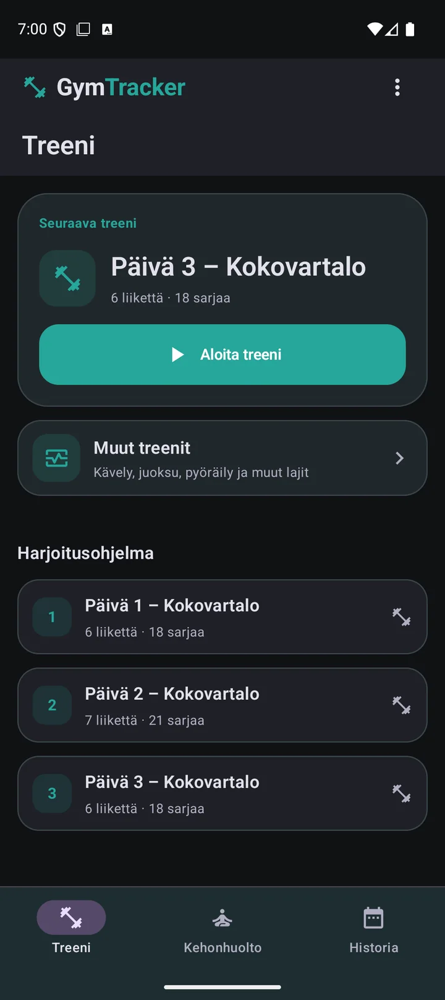

Ennakkotieto · Päivitys tulossa
Uutta GymTrackerissa
Valmentajan viikkopalaute
Valmentaja tarkastelee treenejäsi pidemmällä aikavälillä ja antaa yhden painopisteen seuraavalle jaksolle.
Muut treenit ja GPS
Kävelyt, juoksut ja pyöräilyt tulevat samaan historiaan, ja tuetuissa ulkolajeissa voit tallentaa GPS-reitin.
Sujuvampi treenin kirjaus
Oma numeronäppäimistö helpottaa kirjaamista ja voit vaihtaa treenissä näkyviä mittareita.
Mitä tilausmalli tarkoittaa minulle?
Treenihistoria pysyy luettavissa
Voit katsella treenihistoriaasi myös kokeilun tai tilauksen päätyttyä.
Peruskirjaus vanhalla asennuksella
Siirtymäpäivityksen aikaan mainoksellista ilmaisversiota käyttäneet voivat jatkaa salitreenien peruskirjausta alkuperäisellä asennuksella. Oikeus ei siirry uudelleenasennuksessa eikä puhelimen vaihdossa.
Minulla on tilaus tai Lifetime-oikeus
Voimassa oleva tilauksesi tai Lifetime-oikeutesi säilyy. Jos osto ei näy, palauta ostot Tilaus-näkymässä samalla Google Play -tilillä, jolla teit oston.
Käytän vanhaa ilmaista versiota
Vain siirtymäpäivityksen aikaan FREE-tilaa mainoksilla käyttäneet vanhat asennukset säilyttävät salitreenien peruskirjaamisen mainoksilla. Oikeus säilyy sovelluspäivityksissä, mutta ei siirry varmuuskopion, uudelleenasennuksen, sovellustietojen tyhjennyksen tai puhelimen vaihdon mukana. Tilaus avaa kaikki ominaisuudet; sen päätyttyä säilynyt ilmaisoikeus jatkuu alkuperäisessä asennuksessa.
Aiempi kokeiluni on vielä voimassa
Aiempi paikallinen kokeilu jatkuu alkuperäiseen päättymispäivään. Sen jälkeen tarvitset voimassa olevan käyttöoikeuden uuden treenin aloittamiseen. Päivitys ei aloita uutta kokeilua.
Olen uusi käyttäjä tai haluan tilata
Valitse kuukausi- tai vuositilaus. Google Play näyttää hinnan ja mahdollisen kokeilutarjouksen ennen kuin hyväksyt tilauksen.
Tilaus uusiutuu automaattisesti näytetyllä hinnalla, ellet peru sitä Google Playssa.
30 päivän maksuton kokeilu tarjotaan siihen oikeutetuille. Peru kokeilun aikana Google Playssa välttääksesi ensimmäisen maksun.
Historia ja varmuuskopiot
Kokeilun tai tilauksen päätyttyä voit katsella treenihistoriaasi sekä viedä ja palauttaa varmuuskopion käsin. Uusi harjoittelu edellyttää voimassa olevaa tilausta, ellei sinulla ole aiempaa voimassa olevaa käyttöoikeutta. Tilauksen peruminen säilyttää käyttöoikeuden myönnetyn kauden loppuun. Voit tehdä jo käynnissä olevan harjoituksen loppuun.
Mistä löydän uudet ominaisuudet?
Muut treenit ja GPS
Treeni → Muut treenit → Valitse laji
Kävelyt, juoksut ja pyöräilyt tulevat samaan historiaan, ja tuetuissa ulkolajeissa voit tallentaa GPS-reitin.
Reitti ja yhteenveto
Tuetuissa ulkolajeissa voit tallentaa GPS-reitin ja seurata matkaa ja vauhtia. Valitse GPS ennen aloitusta ja myönnä sijaintilupa, jos haluat tallentaa reitin. Valmis harjoitus ja saatavilla olevat mittarit löytyvät Historiasta.
GPS-matkan tallennuttua lopetus avaa yhteenvedon suoraan. Ilman GPS-matkaa sovellus voi kysyä matkan käsin. Voit valita Älä näytä uudelleen; saat kyselyn takaisin Kysy harjoituksen lopuksi -asetuksesta. Yhteenvedossa voit korjata matkaa ja lisätä muistiinpanoja. Vain saatavilla olevat mittaustiedot näytetään.

Valmentajan viikkopalaute
Treeni → ⋮ → Valmentajan palaute
Valmentaja tarkastelee treenejäsi pidemmällä aikavälillä ja antaa yhden painopisteen seuraavalle jaksolle.
Arviot, viikkopalaute ja ohjelman hienosäätö
Valmentajan viikkopalaute tarkastelee treenejäsi pidemmällä aikavälillä. Saat arvion harjoittelustasi ja yhden painopisteen seuraavalle jaksolle. Palautteessa voidaan huomioida myös kirjattu aerobinen harjoittelu, lämmittely ja kehonhuolto.
Viikkokyselyssä kerrot, miten palauduit ja miltä treeniviikko tuntui. Valmentajan viikkopalaute näyttää valmentajan arvion. Tekoäly tarvitsee verkkoyhteyden ja arvio perustuu käytettävissä oleviin tietoihin.
Ohjelman hienosäätö koskee tulevia treenejä. Pois käytöstä estää muutokset. Vain ehdotuksia -tilassa tarkistat ja hyväksyt ne itse. Automaattisessa tilassa sopivia muutoksia voidaan tehdä uuden kokonaisarvion jälkeen. Käynnissä oleva treeni säilyy ennallaan.
Treeninäkymä ja opastus
Napauta treenin aikana mittaria, kun haluat vaihtaa sen näyttämää tietoa.
Ohje → Tutustu GymTrackeriin / GymTrackerin tilaus → Tutustu GymTrackeriin
Numeronäppäimistö ja opastuksen sisältö
Sovelluksen oma numeronäppäimistö helpottaa painojen ja toistojen muokkausta. Napauttamalla treenin mittaria voit vaihtaa, mitä tietoa se näyttää.
Ohje- ja tilaussivun Tutustu GymTrackeriin -kierros näyttää, miten treeni kirjataan, kehonhuollon ajastinta käytetään ja kehitystä seurataan.
Health Connect
Tuo muiden sovellusten treenejä ja unta tai vie valmistuneet GymTracker-treenit. Voit ottaa tuonnin ja viennin käyttöön erikseen.
Asetukset → Sovelluksen asetukset → Health Connect
Luvat, synkronointi ja tietojen käyttö
Avaa Asetukset → Sovelluksen asetukset → Health Connect. Ota tuonti ja vienti käyttöön erikseen ja hyväksy haluamiesi tietojen luvat. Saatavuus riippuu puhelimen Health Connect -tuesta. Voit lopettaa tuonnin tai viennin tästä näkymästä ja hallita lupia Health Connectissa.
Tuonti hakee muiden sovellusten harjoitukset ja unisessiot viimeiseltä neljältä viikolta. Tiedot päivittyvät automaattisesti avatessasi sovelluksen ja kerran vuorokaudessa taustalla, jos laite tukee sitä ja sallit taustalukemisen. Voit päivittää tiedot myös asetusten tuontipainikkeella. Harjoitukset näkyvät historiassa alkuperätietoineen.
Vienti tallentaa valmistuneita GymTracker-harjoituksia sekä saatavilla olevia syke-, aktiivisten kalorien, matka-, askel- ja reittitietoja myönnettyjen lupien mukaan. Muut sovellukset näyttävät tiedot oman tukensa mukaisesti.
Avaa tuotu harjoitus Historiasta ja valitse reitin näyttäminen. Toisen sovelluksen reitti voi vaatia erillisen luvan. Kaikista harjoituksista ei ole reittiä tai kaikkia mittaustietoja.
Tuodut tiedot tallennetaan puhelimeesi. Unen ja muun liikunnan yhteenvetoja voidaan lähettää tekoälypalveluun valmentajan arviota varten. Health Connect ei korvaa varmuuskopiointia.
Pienemmät parannukset
Aiemmin valittu lämmittely näkyy oikealla kuvalla ja sovelluksen nykyisellä kielellä. Myös kuvallisen opastuksen korostuksia on tarkennettu.